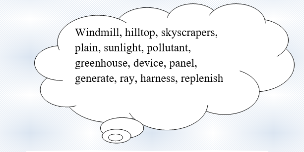

Renewable energy, often referred to as clean energy, comes from natural sources or processes that are constantly replenished. For example, sunlight and wind keep shining and blowing, even if their availability depends on time and weather.
Types of renewable energy sources:
Solar Energy
Humans have been harnessing solar energy for thousands of years—to grow crops, stay warm and dry foods. Today, we use the sun’s rays in many ways—to heat homes and businesses, to warm water, and to power devices. Distributed solar systems generate electricity locally for homes and businesses, either through rooftop panels or community projects that power entire neighborhoods. Solar farms can generate enough power for thousands of homes, using mirrors to concentrate sunlight across acres of solar cells. Solar energy systems do notproduce air pollutants or greenhouse gases.Wind energy
We’ve come a long way from old-fashioned windmills. Today, turbines as tall as skyscrapers—with turbines nearly as wide in diameter—stand at attention around the world. Wind energy turns a turbine’s blades, which feeds an electric generator and produces electricity.
Wind, which accounts for 9.2 percent of U.S. electricity generation, has become one of the cheapest energy sourcesin the country. Top wind power states include California, Iowa, Kansas, Oklahoma, and Texas, though turbines can be placed anywhere with high wind speeds—such as hilltops and open plains—or even offshore in open water.
Task1Vocabulary:Find the definitions of the words in the text.

✔️ A building that turn in the wind and generate power
✔️ A very tall building of many storeys
✔️ A large area of flat land with few trees
✔️ Light from the sun
✔️ A substance that pollutes something
✔️ A glass building with plants inside that needs protection from cold weather
✔️ Something deigned to absorb the sun’s rays as a source of energy
✔️ Produce or create
✔️ Control and make use of
✔️ One of the lines of light that appear to be given off by a bright object
✔️ A piece of mechanical or electronic equipment
✔️ The top part of a hill
✔️ To fill something again or return something to its earlier condition
Task2 Match the words to make fixed phrases
| Renewable | Plains |
| Energy | Sources |
| Open | Generator |
| Greenhouse | Pollutants |
| Solar(2x) | Gases |
| Air | Cells |
| Rooftop | Farms |
| Generate | Electricity |
| Electric | Rays |
| Sun | Energy |